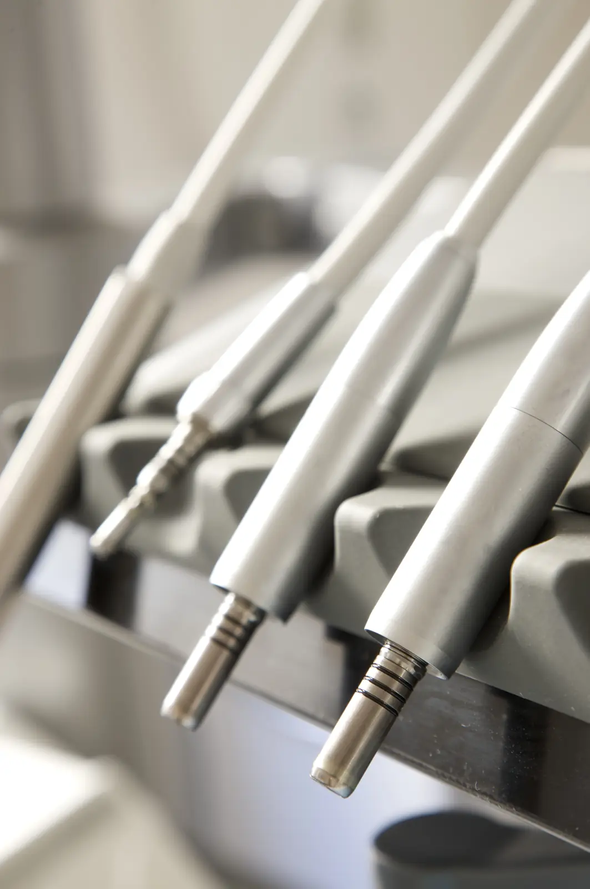

Le circuit des instruments
- 1Pré-désinfectionAprès le soin, les instruments sont immergés dans un bain détergent-désinfectant.
- 2NettoyageIls sont nettoyés, rincés et séchés.
- 3ConditionnementIls sont placés dans des sachets scellés.
- 4StérilisationLes sachets passent à l’autoclave, à la vapeur sous pression.
Chaque cycle de stérilisation est contrôlé et enregistré, pour assurer la traçabilité des instruments.
L’usage unique
Certains matériels sont à usage unique et jetés après chaque patient, comme les aiguilles, les gobelets, les protections ou les champs.
Entre deux patients
Le fauteuil, les surfaces de travail et les équipements sont désinfectés entre deux patients.
